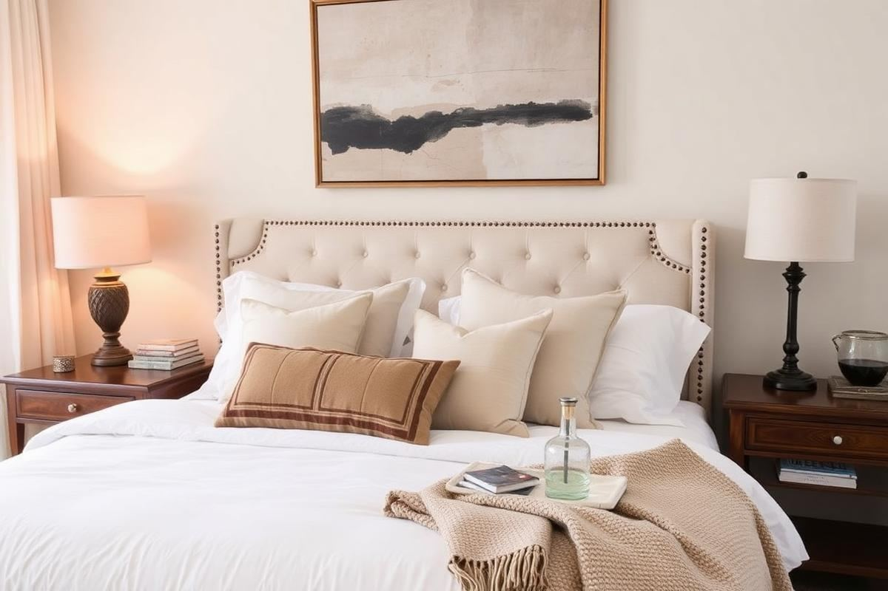
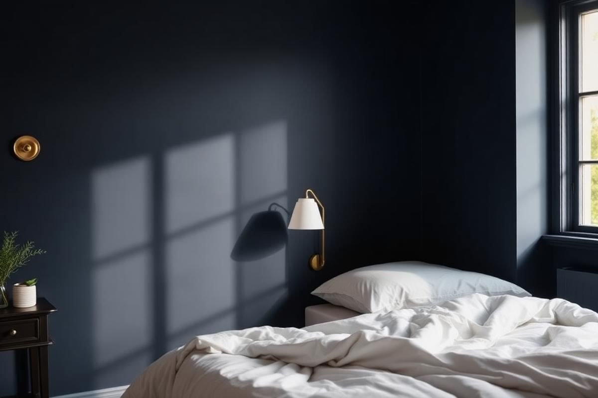

Master Bedroom Decor Ideas That Feel Like a Hotel

Master Bedroom Decor Ideas That Feel Like a Hotel is one of those topics where a little planning goes a long way. In this guide I walk through the process we use in real homes — not just what looks good in a photo, but what actually holds up over time.
Start here
Before you buy or move anything, measure the space and note how you actually use it. The best-looking room is one that matches how you live, so start with the routines: where you sit, where you drop keys, where the light falls in the afternoon.
The essentials
Focus on the pieces that do the most work. Get those right and the rest of the room comes together with much less effort. Aim for materials that patina rather than degrade, and colors you will still like in five years.
- Choose one clear focal point per room.
- Pick materials that improve with age.
- Layer textures instead of adding more colors.
- Leave visual breathing room — negative space is a design element.
Common mistakes
The mistakes we see most often are matching everything too tightly, over-scaling accessories, and skipping proper lighting. Fix those three and most rooms improve overnight.

Elevated Bedding Stratagems
The cornerstone of any hotel-worthy master bedroom is unequivocally the bedding. Forget flimsy fabrics and mismatched sets. Begin with a high-quality mattress protector, ideally a breathable cotton blend or a bamboo-derived rayon, costing around $80-$150 for a queen size. Next, invest in high thread count sheets. While 1000-thread-count can sound impressive, a truly luxurious feel often comes from 400-600 thread count long-staple cotton (Egyptian or Supima) or linen. Expect to pay $200-$400 for a queen sheet set. For the duvet, choose a down or down-alternative insert with a fill power of 600-750 for optimal loft and warmth without excessive weight. A queen-sized down insert will cost $300-$700. The duvet cover itself should be a crisp white or a subtle, calming neutral. Layering is key: incorporate a textured throw blanket at the foot of the bed, such as a cashmere blend (starting around $150) or a chunky knit merino wool (around $100). Finally, pillow talk: two king-sized pillows for a queen bed, two European squares (26"x26") for visual height, and one decorative lumbar or bolster pillow. Aim for medium-firm feather or down alternatives for sleeping, and decorative covers that complement your duvet cover.
Strategic Lighting Design
Lighting is often overlooked but plays a crucial role in creating a sophisticated hotel ambiance. The goal is multi-layered lighting, not just one harsh overhead fixture. Start by replacing any builder-grade ceiling lights with a dimmable flush mount or a semi-flush mount fixture ($100-$300) that casts a soft, diffused glow. For bedside lighting, choose lamps that are proportional to your nightstands. If your nightstands are 24-28 inches wide, your lamp bases should be around 8-10 inches wide, and the shades should not exceed the width of the nightstand. The bottom of the lampshade should be roughly shoulder height when sitting in bed, typically 20-24 inches from the mattress top. Consider wall-mounted sconces ($80-$200 each) for a modern, space-saving alternative. Incorporate at least one accent light, such as a small task lamp on a dresser or a floor lamp ($70-$250) in a reading nook, to create pockets of warmth. All light sources should be on dimmer switches (an electrician can install these for $50-$100 per switch, plus fixture cost) and use soft white (2700K-3000K) LED bulbs for a welcoming, warm light.
- Overhead: Dimmable flush or semi-flush mount.
- Bedside: Lamps or sconces proportionate to nightstands, bottom of shade at shoulder height.
- Accent: Task lamp or floor lamp for ambiance.
- Bulbs: Soft white (2700K-3000K) LEDs on dimmer switches.
Streamlined Storage Solutions
Clutter is the enemy of hotel-chic. Master bedrooms in upscale hotels always appear immaculate because every item has a designated, often hidden, place. Start by decluttering mercilessly. For clothes, if your existing closet isn't optimized, consider a custom closet system (ranging from $500 for DIY kits to several thousand for professional installation) or add shelving, drawers, and hanging rods where needed. Under-bed storage bins (hard plastic or fabric, $20-$50 each) are excellent for seasonal items or extra linens. Nightstands should ideally have at least one drawer to tuck away remotes, charging cables, and reading glasses. A beautifully curated tray ($30-$80) can hold essential items like a carafe of water, a small succulent, and a favorite hand cream, keeping the surface organized. For books or decorative accents, open shelving can work if meticulously styled, but a closed cabinet or dresser is often preferable to maintain a clean aesthetic. Think vertical: tall, narrow bookshelves ($150-$400) or dressers maximize storage in smaller spaces without sacrificing floor area. The goal is easy access without any visual noise.
Curated Art and Mirror Placement
Art and mirrors serve not just as decoration, but as strategic tools to enhance light, space, and personality. For a hotel-inspired feel, opt for larger, impactful pieces rather than a multitude of small ones. A single large artwork (canvas print or framed photograph, 30”x40” or larger, starting around $100-$300 for quality reproductions) above the headboard grounds the bed and acts as a focal point. Ensure its width is at least two-thirds the width of your headboard. Alternatively, a pair of complementary artworks (e.g., two 24”x30” prints) can flank the bed or be placed on an opposing wall. Mirrors are essential for bouncing light and making a room feel larger. A large wall mirror (at least 36" wide, $100-$300) hung opposite a window will reflect natural light, or a full-length leaning mirror (60"-72" tall, $80-$250) can open up a corner. When hanging, the center of the artwork or mirror should typically be at eye level (around 57-60 inches from the floor) or 6-8 inches above a piece of furniture it's placed over. Avoid overly busy galleries; instead, choose one or two substantial pieces that resonate with your chosen aesthetic.
Key takeaways
- Match the room to how you actually live.
- Anchor with one main piece and clear lighting.
- Layer textures, not colors.
- Leave breathing room around every object.
Frequently asked questions
Where should I start?
Start with the largest piece and the light. Everything else — art, textiles, small objects — is easier to place once those two anchors are set.
What is a realistic budget?
Prioritize the pieces you touch every day. Spend more on those and less on decorative items, which are easy to swap over time.
How long should this last?
A well-chosen main piece should last 10–15 years. Refreshes come through textiles, art, and accessories, not full replacements.

Sophia Bennett is a certified interior stylist and the senior editor at Styleire. She has spent more than eight years helping homeowners and renters create warm, functional interiors, with hands-on experience across small city apartments and family homes. Her work has been informed by close collaboration with independent designers, craftspeople, and product testers.
View full profile →Related reading

Cozy Bedroom Ideas: 12 Changes That Actually Make a Difference
Cozy is a feeling built from small, specific choices. Here are the twelve that make the biggest difference.

How to Choose Bedding That Actually Feels Good
Thread count is mostly noise. Here is what actually determines how bedding feels.

Bedroom Color Ideas: Restful Palettes That Work
Bedroom Color Ideas: Restful Palettes That Work — a clear, editor-tested guide covering the essentials without the filler.